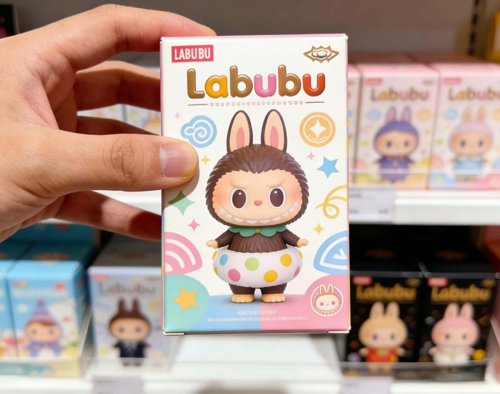
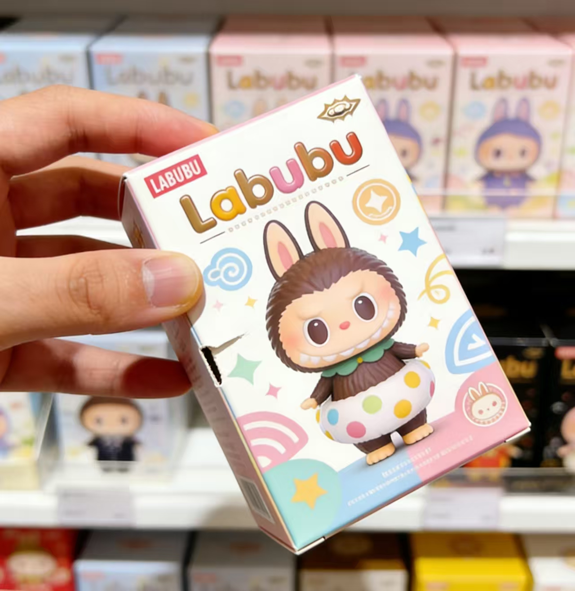
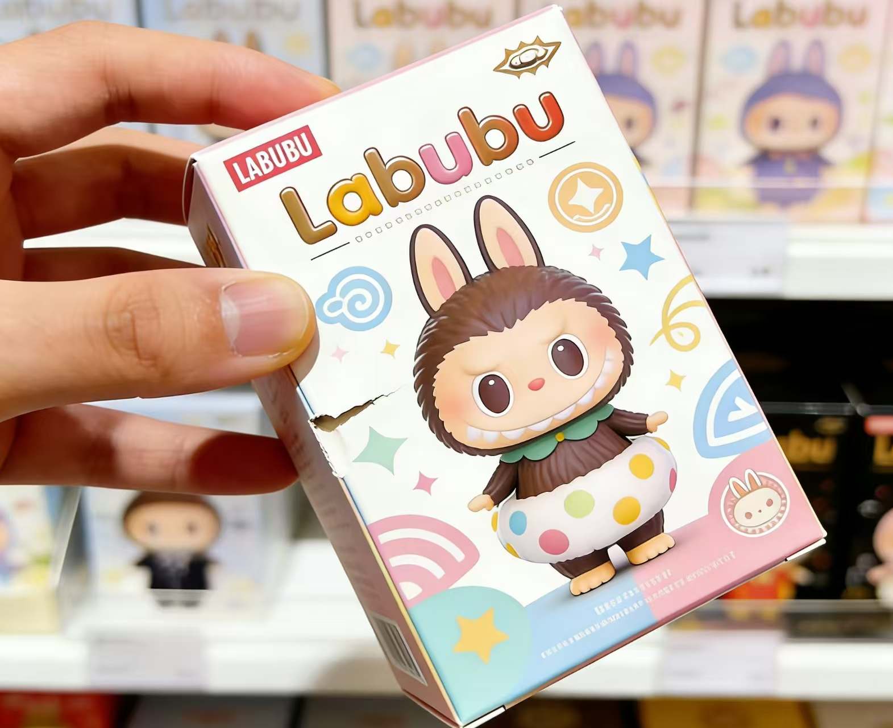

𝙿𝚒𝚌𝚔 𝚞𝚙 𝚝𝚑𝚎 𝚋𝚘𝚡. 𝙲𝚊𝚛𝚎𝚏𝚞𝚕𝚕𝚢 𝚋𝚛𝚎𝚊𝚔 𝚝𝚑𝚎 𝚜𝚎𝚊𝚕 𝙲𝚘𝚗𝚏𝚒𝚛𝚖 𝚝𝚑𝚎 𝚏𝚒𝚐𝚞𝚛𝚎. 𝙸𝚏 𝚗𝚘𝚝, 𝚙𝚛𝚎𝚜𝚜 𝚝𝚑𝚎 𝚎𝚍𝚐𝚎𝚜 𝚌𝚕𝚘𝚜𝚎𝚍. ᴄᴏɴᴛɪɴᴜᴇ
𝙼𝚊𝚔𝚎 𝚜𝚞𝚛𝚎 ▶ — 𝚓𝚞𝚜𝚝 𝚎𝚗𝚘𝚞𝚐𝚑 ▶ ▶
𝚗𝚘 𝚘𝚗𝚎 𝚒𝚜 𝚠𝚊𝚝𝚌𝚑𝚒𝚗𝚐. 𝚝𝚘 𝚜𝚎𝚎 𝚒𝚗𝚜𝚒𝚍𝚎. 𝙸𝚜 𝚒𝚝 𝚝𝚑𝚎 𝚘𝚗𝚎 𝚢𝚘𝚞 𝚠𝚊𝚗𝚝𝚎𝚍? 𝚁𝚎𝚝𝚞𝚛𝚗 𝚒𝚝 𝚝𝚘 𝚝𝚑𝚎 𝚜𝚑𝚎𝚕𝚏. ᴀʙᴏʀᴛ!